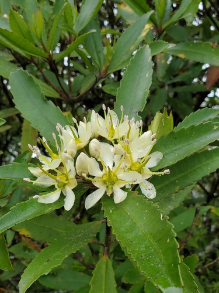

Strasburgeriaceae
Strasburgeriaceae is a very small family of evergreen trees belonging to the order Crossosomatales within the Rosid clade. The family contains only one or two genera, endemic to New Caledonia and New Zealand respectively. They are characterized by alternate, simple, toothed, stipulate leaves, relatively large flowers with distinct parts and numerous or 10 stamens, and fruit a berry or capsule.
Overview
Strasburgeriaceae is a small and geographically restricted family of flowering plants, placed within the order Crossosomatales in the Malvid clade of Rosids. The family includes only two species in one or two genera, depending on the classification system. Strasburgeria robusta is endemic to the island of New Caledonia, while Ixerba brexioides is endemic to the North Island of New Zealand. While Ixerba was often placed in its own family (Ixerbaceae), molecular data strongly supports its inclusion within Strasburgeriaceae (as followed by APG IV).
These plants are evergreen trees found in forest habitats in their respective island homes. They possess relatively large, radially symmetrical flowers with distinct sepals and petals, numerous or 10 stamens, and a superior ovary typically composed of 5 fused carpels. Their restricted Southern Hemisphere distribution, particularly the New Caledonia/New Zealand link, points to an ancient origin, likely related to the breakup of the Gondwanan supercontinent.
Due to their rarity and limited distribution, they are not economically important but hold significant interest for understanding plant evolution, biogeography, and relationships within the Crossosomatales order.
Quick Facts
- Scientific Name: Strasburgeriaceae
- Common Name: (None widely accepted)
- Number of Genera: 1-2 (Strasburgeria, Ixerba)
- Number of Species: 2
- Distribution: New Caledonia (Strasburgeria), New Zealand (Ixerba)
- Evolutionary Group: Eudicots - Rosids - Malvids - Crossosomatales
Key Characteristics
Growth Form and Habit
Members are evergreen trees, ranging from small to medium size.
Leaves
Leaves are arranged alternately (sometimes appearing clustered or pseudo-whorled in Ixerba). They are simple, relatively large, leathery (coriaceous), with margins that are typically toothed (serrate or crenate). Small stipules are present, though they may fall off early (deciduous).
Inflorescence
Flowers are borne in terminal or axillary inflorescences, typically few-flowered cymes or panicles, or flowers may be solitary (especially in Ixerba).
Flowers
Flowers are relatively large, showy, radially symmetrical (actinomorphic), and bisexual (perfect). Key floral features include:
- Calyx: Consists of 4 or 5 sepals, which are distinct (free) or slightly fused at the base, often thick and persistent. Bracteoles may be present below the calyx.
- Corolla: Consists of 4 or 5 distinct (free) petals, usually large, spreading, and white in color.
- Androecium: Stamens are either numerous (many, >10, in Strasburgeria) or definite, 10 in two whorls of 5 (Ixerba). Filaments are distinct and arise from the receptacle.
- Gynoecium: The pistil consists of 5 fused carpels (syncarpous). The ovary is positioned superiorly and is divided into 5 chambers (locules), each containing one or two ovules attached to the central axis (axile placentation). A single, thick, persistent style terminates in a capitate or lobed stigma.
- Nectar Disc: A prominent, often lobed or annular, nectar-producing disc is present surrounding the base of the ovary (intrastaminal).
Fruits and Seeds
The fruit differs between the two genera: it is a fleshy, indehiscent berry containing few large seeds in Strasburgeria, or a leathery capsule that splits septicidally into 5 valves in Ixerba. Seeds are relatively large, sometimes with a fleshy aril (Ixerba).
Chemical Characteristics
The family is not strongly defined by unique chemical markers, though tannins and possibly saponins may be present.
Field Identification
Identifying members of Strasburgeriaceae relies on recognizing them as trees endemic to New Caledonia or New Zealand with specific leaf and floral features:
Primary Identification Features
- Habit & Location: Identify as evergreen trees found only in New Caledonia (Strasburgeria) or the North Island of New Zealand (Ixerba).
- Leaves: Look for alternate, simple, toothed, stipulate leaves, often large and leathery.
- Flowers: Relatively large, showy, radially symmetric, bisexual flowers. Key features: 4-5 distinct sepals, 4-5 distinct white petals, either numerous stamens (Strasburgeria) or 10 stamens (Ixerba).
- Gynoecium: Superior ovary composed of 5 fused carpels, with a single thick style and a prominent nectar disc at the base.
- Fruit: A fleshy berry (Strasburgeria) or a leathery 5-valved capsule (Ixerba).
Secondary Identification Features
- Stipules: Presence of stipules or stipule scars.
- Style/Stigma: Single thick, persistent style.
- Placentation: Axile placentation within a 5-locular ovary.
- Nectar Disc: Prominent disc around ovary base.
Seasonal Identification Tips
- Year-round: Evergreen tree habit and leaf characteristics (alternate, simple, toothed, stipulate, leathery) are key. Geographic location is crucial.
- Flowering Season: Large, showy white flowers appear seasonally and are conspicuous.
- Fruiting: Distinctive berry (Strasburgeria) or capsule (Ixerba) mature later.
Common Confusion Points (in NC/NZ Flora)
- Cunoniaceae: Common trees/shrubs in the region. Often differ in having opposite, usually compound leaves (though some simple), typically smaller flowers often in panicles, and usually only 2 carpels forming a capsule or follicle.
- Pittosporaceae: Trees/shrubs with alternate simple leaves. Differ in lacking stipules, having 5-merous flowers but usually only 5 stamens, and different capsule/berry structure.
- Myrtaceae (e.g., Metrosideros in NZ): Trees/shrubs, often opposite simple leaves with oil dots. Differ in having numerous stamens but usually an inferior ovary and different fruit types.
- Other local families: Identification requires confirming the combination: alternate simple toothed stipulate leaves, large 4-5 petaled flower, 10 or numerous stamens, superior 5-carpellate ovary with prominent disc, and specific fruit type (berry/capsule).
Field Guide Quick Reference
Look For:
- Evergreen tree (New Caledonia or New Zealand)
- Leaves alternate, simple, toothed, stipulate
- Flowers large, white, radial, bisexual
- 4-5 sepals, 4-5 distinct petals
- Stamens 10 or numerous, distinct
- Ovary superior, 5 carpels
- Prominent nectar disc
- Fruit a berry (NC) or capsule (NZ)
Key Distinctions:
- Geographic endemism (NC/NZ)
- Combination of stipulate leaves + 5 carpels + prominent disc
- Stamen number (10 or numerous)
- Fruit type specific to genus/location
- Superior ovary (vs. Myrtaceae)
Notable Examples
The family contains only two known species, each in its own genus (or sometimes treated as one genus):

Strasburgeria robusta
(No common English name)
The sole species in its genus, this tree is endemic to the island of New Caledonia. It has large, alternate, simple, leathery, toothed leaves with stipules. Its large, white flowers possess 4-5 petals and numerous (many) stamens surrounding a prominent nectar disc and a 5-carpellate superior ovary. The fruit is a large, fleshy berry.

Ixerba brexioides
Tāwari
The sole species in its genus (often included in Strasburgeriaceae), Tāwari is an evergreen tree endemic to the North Island of New Zealand. It has alternate or somewhat whorled, simple, toothed, leathery leaves with stipules. It produces terminal panicles of large, showy white flowers with 5 petals, 10 stamens, and a prominent nectar disc around the 5-carpellate superior ovary. The fruit is a leathery capsule that splits open to reveal seeds with orange arils.
Phylogeny and Classification
Strasburgeriaceae is classified within the small rosid order Crossosomatales, belonging to the Malvid clade. This order is somewhat unusual in containing only a few small families, most of which are restricted to North America (e.g., Crossosomataceae, Staphyleaceae) or Asia (Stachyuraceae), making the Southern Hemisphere distribution of Strasburgeriaceae particularly noteworthy.
The family, in its current circumscription including both Strasburgeria (New Caledonia) and Ixerba (New Zealand), represents a distinct lineage within Crossosomatales. Its placement highlights ancient connections between these landmasses, likely dating back to the fragmentation of the Gondwanan supercontinent. The inclusion of Ixerba within Strasburgeriaceae is based on strong molecular evidence, despite some morphological differences (like fruit type and stamen number) that previously led to its placement in its own family, Ixerbaceae.
Position in Plant Phylogeny
- Kingdom: Plantae
- Clade: Angiosperms (Flowering plants)
- Clade: Eudicots
- Clade: Rosids
- Clade: Malvids
- Order: Crossosomatales
- Family: Strasburgeriaceae
Evolutionary Significance
The Strasburgeriaceae family is significant for:
- Biogeography: Its restricted and disjunct Southern Hemisphere distribution (New Caledonia and New Zealand) provides compelling evidence for Gondwanan origins and vicariance, contrasting with the primarily Northern Hemisphere distribution of most other Crossosomatales families.
- Crossosomatales Diversity: Showcases morphological diversity within the order, particularly in floral features (e.g., stamen number) and fruit type (berry vs. capsule).
- Island Endemism: Represents unique evolutionary lineages endemic to specific island systems known for high biodiversity.